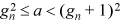

By the “integer square root” function, we mean the function ⌊⌋. To extend its range of application and to avoid deciding what to do with a negative argument, we assume x is unsigned. Thus, 0 ≤ x ≤ 232 – 1.
For floating-point numbers, the square root is almost universally computed by Newton’s method. This method begins by somehow obtaining a starting estimate g0 of . Then, a series of more accurate estimates is obtained from
The iteration converges quadratically—that is, if at some point gn is accurate to n bits, then gn + 1 is accurate to 2n bits. The program must have some means of knowing when it has iterated enough so it can terminate.
It is a pleasant surprise that Newton’s method works fine in the domain of integers. To see this, we need the following theorem:
THEOREM. Let gn + 1 = ⌊(gn + ⌊a / gn⌋)/2⌋, with gn, a integers greater than 0. Then
That is, if we have an integral guess gn to ⌊⌋ that is too high, then the next guess gn + 1 will be strictly less than the preceding one, but not less than ⌊⌋. Therefore, if we start with a guess that’s too high, the sequence converges monotonically. If the guess gn = ⌊⌋, then the next guess is either equal to gn or is 1 larger. This provides an easy way to determine when the sequence has converged: If we start with g0 ≥ ⌊⌋, convergence has occurred when gn + 1 ≥ gn, and then the result is precisely gn.
The case a = 0 must be treated specially, because this procedure would lead to dividing 0 by 0.
Proof. (a) Because gn is an integer,
Because gn > ⌊⌋ and gn is an integer, gn > . Define ε by gn = (1 + ε). Then ε > 0 and
(b) Because gn = ⌊⌋, – 1 < gn ≤ , so that . Hence, we have
The difficult part of using Newton’s method to calculate ⌊⌋ is getting the first guess. The procedure of Figure 11–1 sets the first guess g0 equal to the least power of 2 that is greater than or equal to For example, for x = 4, g0 = 2, and for x = 5, g0 = 4.
int isqrt(unsigned x) {
unsigned x1;
int s, g0, g1;
if (x <= 1) return x;
s = 1;
x1 = x - 1;
if (x1 > 65535) {s = s + 8; x1 = x1 >> 16;}
if (x1 > 255) {s = s + 4; x1 = x1 >> 8;}
if (x1 > 15) {s = s + 2; x1 = x1 >> 4;}
if (x1 > 3) {s = s + 1;}
g0 = 1 << s; // g0 = 2**s.
g1 = (g0 + (x >> s)) >> 1; // g1 = (g0 + x/g0)/2.
while (g1 < g0) { // Do while approximations
g0 = g1; // strictly decrease.
g1 = (g0 + (x/g0)) >> 1;
}
return g0;
}
FIGURE 11–1. Integer square root, Newton’s method.
Because the first guess g0 is a power of 2, it is not necessary to do a real division to get g1; instead, a shift right suffices.
Because the first guess is accurate to about one bit, and Newton’s method converges quadratically (the number of bits of accuracy doubles with each iteration), one would expect the procedure to converge within about five iterations (on a 32-bit machine), which requires four divisions (because the first iteration substitutes a shift right). An exhaustive experiment reveals that the maximum number of divisions is five, or four for arguments up to 16,785,407.
If number of leading zeros is available, then getting the first guess is very simple: Replace the first seven executable lines in the procedure above with
if (x <= 1) return x;
s = 16 - nlz(x - 1)/2;
Another alternative, if number of leading zeros is not available, is to compute s by means of a binary search tree. This method permits getting a slightly better value of g0: the least power of 2 that is greater than or equal to ⌊⌋. For some values of x, this gives a smaller value of g0, but a value large enough so that the convergence criterion of the theorem still holds. The difference in these schemes is illustrated in the following table.
This procedure is shown in Figure 11–2. It is convenient there to treat small values of x(0 ≤ x ≤ 24) specially, so that no divisions are done for them.
int isqrt(unsigned x) {
int s, g0, g1;
if (x <= 4224)
if (x <= 24)
if (x <= 3) return (x + 3) >> 2;
else if (x <= 8) return 2;
else return (x >> 4) + 3;
else if (x <= 288)
if (x <= 80) s = 3; else s = 4;
else if (x <= 1088) s = 5; else s = 6;
else if (x <= 1025*1025 - 1)
if (x <= 257*257 - 1)
if (x <= 129*129 - 1) s = 7; else s = 8;
else if (x <= 513*513 - 1) s = 9; else s = 10;
else if (x <= 4097*4097 - 1)
if (x <= 2049*2049 - 1) s = 11; else s = 12;
else if (x <= 16385*16385 - 1)
if (x <= 8193*8193 - 1) s = 13; else s = 14;
else if (x <= 32769*32769 - 1) s = 15; else s = 16;
g0 = 1 << s; // g0 = 2**s.
// Continue as in Figure 11–1.
FIGURE 11–2. Integer square root, binary search for first guess.
The worst-case execution time of the algorithm of Figure 11–1, on the basic RISC, is about 26 + (D + 6) n cycles, where D is the divide time in cycles and n is the number of times the while-loop is executed. The worst-case execution time of Figure 11–2 is about 27 + (D + 6) n cycles, assuming (in both cases) that the branch instructions take one cycle. The table that follows gives the average number of times the loop is executed by the two algorithms, for x uniformly distributed in the indicated range.
If we assume a divide time of 20 cycles and x ranging uniformly from 0 to 9999, then both algorithms execute in about 81 cycles.
Because the algorithms based on Newton’s method start out with a sort of binary search to obtain the first guess, why not do the whole computation with a binary search? This method would start out with two bounds, perhaps initialized to 0 and 216. It would make a guess at the midpoint of the bounds. If the square of the midpoint is greater than the argument x, then the upper bound is changed to be equal to the midpoint. If the square of the midpoint is less than the argument x, then the lower bound is changed to be equal to the midpoint. The process ends when the upper and lower bounds differ by 1, and the result is the lower bound.
This avoids division, but requires quite a few multiplications—16 if 0 and 216 are used as the initial bounds. (The method gets one more bit of precision with each iteration.) Figure 11–3 illustrates a variation of this procedure, which uses initial values for the bounds that are slight improvements over 0 and 216. The procedure shown in Figure 11–3 also saves a cycle in the loop, for most RISC machines, by altering a and b in such a way that the comparison is b ≥ a rather than b – a ≥ 1.
The predicates that must be maintained at the beginning of each iteration are a ≤ ⌊⌋ + 1 and b ≥ ⌊⌋. The initial value of b should be something that’s easy to compute and close to ⌊⌋. Reasonable initial values are x, x ÷ 4 + 1, x ÷ 8 + 2, x ÷ 16 + 4, x ÷ 32 + 8, x ÷ 64 + 16, and so on. Expressions near the beginning of this list are better initial bounds for small x, and those near the end are better for larger x. (The value x ÷ 2 + 1 is acceptable, but probably not useful, because x ÷ 4 + 1 is everywhere a better or equal bound.)
int isqrt(unsigned x) {
unsigned a, b, m; // Limits and midpoint.
a = 1;
b = (x >> 5) + 8; // See text.
if (b > 65535) b = 65535;
do {
m = (a + b) >> 1;
if (m*m > x) b = m - 1;
else a = m + 1;
} while (b >= a);
return a - 1;
}
FIGURE 11–3. Integer square root, simple binary search.
Seven variations on the procedure shown in Figure 11–3 can be more or less mechanically generated by substituting a + 1 for a, or b – 1 for b, or by changing m = (a + b) ÷ 2 to m = (a + b + 1) ÷ 2, or some combination of these substitutions.
The execution time of the procedure shown in Figure 11–3 is about 6 + (M + 7.5)n, where M is the multiplication time in cycles and n is the number of times the loop is executed. The following table gives the average number of times the loop is executed, for x uniformly distributed in the indicated range.
If we assume a multiplication time of 5 cycles and x ranging uniformly from 0 to 9999, the algorithm runs in about 94 cycles. The maximum execution time (n = 16) is about 206 cycles.
If number of leading zeros is available, the initial bounds can be set from
b = (1 << (33 - nlz(x))/2) - 1;
a = (b + 3)/2;
That is, . These are very good bounds for small values of x (one loop iteration for 0 ≤ x ≤ 15), but only a moderate improvement, for large x, over the bounds calculated in Figure 11–3. For x in the range 0 to 9999, the average number of iterations is about 5.45, which gives an execution time of about 74 cycles, using the same assumptions as above.
There is a shift-and-subtract algorithm for computing the square root that is quite similar to the hardware division algorithm described in Figure 9–2 on page 193. Embodied in hardware on a 32-bit machine, this algorithm employs a 64-bit register that is initialized to 32 0-bits followed by the argument x. On each iteration, the 64-bit register is shifted left two positions, and the current result y (initially 0) is shifted left one position. Then 2y + 1 is subtracted from the left half of the 64-bit register. If the result of the subtraction is nonnegative, it replaces the left half of the 64-bit register, and 1 is added to y (this does not require an adder, because y ends in 0 at this point). If the result of the subtraction is negative, then the 64-bit register and y are left unaltered. The iteration is done 16 times.
This algorithm was described in 1945 [JVN].
Perhaps surprisingly, this process runs in about half the time of that of the 64 ÷ 32 ⇒ 32 hardware division algorithm cited, because it does half as many iterations and each iteration is about equally complex in the two algorithms.
To code this algorithm in software, it is probably best to avoid the use of a doubleword
shift register, which requires about four instructions to shift. The algorithm in
Figure 11–4 [GLS1] accomplishes this by shifting y and a mask bit m to the right. It executes in about 149 basic RISC instructions (average). The two
expressions y | m could also be y + m.
The operation of this algorithm is similar to the grade-school method. It is illustrated here, for finding on an 8-bit machine.
1011 0011 x0 Initially, x = 179 (0xB3).
- 1 b1
________
0111 0011 x1 0100 0000 y1
- 101 b2 0010 0000 y2
________
0010 0011 x2 0011 0000 y2
- 11 01 b3 0001 1000 y3
________
0010 0011 x3 0001 1000 y3 (Can’t subtract).
- 1 1001 b4 0000 1100 y4
________
0000 1010 x4 0000 1101 y4
The result is 13 with a remainder of 10 left in register x.
int isqrt(unsigned x) {
unsigned m, y, b;
m = 0x40000000;
y = 0;
while(m != 0) { // Do 16 times.
b = y | m;
y = y >> 1;
if (x >= b) {
x = x - b;
y = y | m;
}
m = m >> 2;
}
return y;
}
FIGURE 11–4. Integer square root, hardware algorithm.
It is possible to eliminate the if x >= b test by the usual trickery involving shift right signed 31. It can be proved that the high-order bit of b is always zero (in fact, b ≤ 5 · 228), which simplifies the x >= b predicate (see page 23). The result is that the if statement group can be replaced with
t = (int)(x | ~(x - b)) >> 31; // -1 if x >= b, else 0.
x = x - (b & t);
y = y | (m & t);
This replaces an average of three cycles with seven, assuming the machine has or not, but it might be worthwhile if a conditional branch in this context takes more than five cycles.
Somehow it seems that it should be easier than some hundred cycles to compute an integer square root in software. Toward this end, we offer the expressions that follow to compute it for very small values of the argument. These can be useful to speed up some of the algorithms given above, if the argument is expected to be small.
It should be a cinch to compute.
But the best we can do
Is use powers of two
And iterate the method of Newt!
For cube roots, Newton’s method does not work out very well. The iterative formula is a bit complex:
and there is of course the problem of getting a good starting value x0.
However, there is a hardware algorithm, similar to the hardware algorithm for square root, that is not too bad for software. It is shown in Figure 11–5.
The three add’s of 1 can be replaced by or’s of 1, because the value being incremented is even. Even with this change, the algorithm is of questionable value for implementation in hardware, mainly because of the multiplication y * (y + 1).
This multiplication is easily avoided by applying the compiler optimization of strength
reduction to the y-squared term. Introduce another unsigned variable y2 that will have the value of y-squared, by updating y2 appropriately wherever y receives a new value. Just before y = 0 insert y2 = 0. Just before y = 2*y insert y2 = 4*y2. Change the assignment to b to b = (3*y2 + 3*y + 1) << s (and factor out the 3). Just before y = y + 1, insert y2 = y2 + 2*y + 1. The resulting program has no multiplications except by small constants, which can
be changed to shift’s and add’s. This program has three add’s of 1, which can all be changed to or’s of 1. It is faster unless your machine’s multiply instruction takes only two or fewer cycles.
int icbrt(unsigned x) {
int s;
unsigned y, b;
y = 0;
for (s = 30; s >= 0; s = s - 3) {
y = 2*y;
b = (3*y*(y + 1) + 1) << s;
if (x >= b) {
x = x - b;
y = y + 1;
}
}
return y;
}
FIGURE 11–5. Integer cube root, hardware algorithm.
Caution: [GLS1] points out that the code of Figure 11–5, and its strength-reduced derivative, do not work if adapted in the obvious way to
a 64-bit machine. The assignment to b can then overflow. This problem can be avoided by dropping the shift left of s from the assignment to b, inserting after the assignment to b the assignment bs = b << s, and changing the two lines if (x >= b) {x = x – b ... to if (x >= bs && b == (bs >> s)) {x = x – bs ....
A well-known technique for computing xn, when n is a nonnegative integer, involves the binary representation of n. The technique applies to the evaluation of an expression of the form x · x · x · ... · x where · is any associative operation, such as addition, multiplication including matrix multiplication, and string concatenation (as suggested by the notation (‘ab’)3 = ‘ababab’). As an example, suppose we wish to compute y = x13. Because 13 expressed in binary is 1101 (that is, 13 = 8 + 4 + 1),
x13 = x8 + 4 + 1 = x8 · x4 · x1.
Thus, x13 can be computed as follows:
This requires five multiplications, considerably fewer than the 12 that would be required by repeated multiplication by x.
If the exponent is a variable, known to be a nonnegative integer, the technique can be employed in a subroutine, as shown in Figure 11–6.
The number of multiplications done by this method is, for exponent n ≥ 1,
This is not always the minimal number of multiplications. For example, for n = 27, the binary decomposition method computes
x16 · x8 · x2 · x1,
which requires seven multiplications. However, the scheme illustrated by
((x3)3)3
requires only six. The smallest number for which the binary decomposition method is not optimal is n = 15 (Hint: x15 = (x3)5).
Perhaps surprisingly, there is no known simple method that, for all n, finds an optimal sequence of multiplications to compute xn. The only known methods involve an extensive search. The problem is discussed at some length in [Knu2, 4.6.3].
The binary decomposition method has a variant that scans the binary representation of the exponent in left-to-right order [Rib, 32], which is analogous to the left-to-right method of converting binary to decimal. Initialize the result y to 1, and scan the exponent from left to right. When a 0 is encountered, square y. When a 1 is encountered, square y and multiply it by x. This computes as
(((12 · x)2 · x)2)2 · x.
int iexp(int x, unsigned n) {
int p, y;
y = 1; // Initialize result
p = x; // and p.
while(1) {
if (n & 1) y = p*y; // If n is odd, mult by p.
n = n >> 1; // Position next bit of n.
if (n == 0) return y; // If no more bits in n.
p = p*p; // Power for next bit of n.
}
}
FIGURE 11–6. Computing xn by binary decomposition of n.
It always requires the same number of (nontrivial) multiplications as the right-to-left method of Figure 11–6.
The IBM XL Fortran compiler takes the definition of this function to be
It is assumed that n and the result are interpreted as signed integers. The ANSI/ISO Fortran standard requires that the result be 0 if n < 0. The definition above for n ≥ 31 seems reasonable in that it is the correct result modulo 232, and it agrees with what repeated multiplication would give.
The standard way to compute 2n is to put the integer 1 in a register and shift it left n places. This does not satisfy the Fortran definition, because shift amounts are usually treated modulo 64 or modulo 32 (on a 32-bit machine), which gives incorrect results for large or negative shift amounts.
If your machine has number of leading zeros, pow2(n) can be computed in four instructions as follows [Shep]:
The shift right operations are “logical” (not sign-propagating), even though n is a signed quantity.
If the machine does not have the nlz instruction, its use above can be replaced with one of the x = 0 tests given in “Comparison Predicates” on page 23, changing the expression . A possibly better method is to realize that the predicate 0 ≤ x ≤ 31 is equivalent to and then simplify the expression for given in the cited section; it becomes ¬x & (x – 32). This gives a solution in five instructions (four if the machine has and not):
By the “integer logarithm” function we mean the function ⌊logb x⌋, where x is a positive integer and b is an integer greater than or equal to 2. Usually, b = 2 or 10, and we denote these functions by “ilog2” and “ilog10,” respectively. We use “ilog” when the base is unspecified.
It is convenient to extend the definition to x = 0 by defining ilog(0) = –1 [CJS]. There are several reasons for this definition:
• The function ilog2(x) is then related very simply to the number of leading zeros function, nlz(x), by the formula shown below, including the case x = 0. Thus, if one of these functions is implemented in hardware or software, the other is easily obtained.
ilog2(x) = 31 – nlz(x)
• It is easy to compute ⌈log(x)⌉ using the formula below. For x = 1, this formula implies that ilog(0) = –1.
⌈log(x)⌉ = ilog(x – 1) + 1
• It makes the following identity hold for x = 1 (but it doesn’t hold for x = 0).
ilog2(x ÷ 2) = ilog2(x) – 1
• It makes the result of ilog(x) a small dense set of integers (–1 to 31 for ilog2(x) on a 32-bit machine, with x unsigned), making it directly useful for indexing a table.
• It falls naturally out of several algorithms for computing ilog2(x) and ilog10(x).
Unfortunately, it isn’t the right definition for “number of digits of x,” which is ilog(x) + 1 for all x except x = 0. It seems best to consider that anomalous.
For x < 0, ilog(x) is left undefined. To extend its range of utility, we define the function as mapping unsigned numbers to signed numbers. Thus, a negative argument cannot occur.
Computing ilog2(x) is essentially the same as computing the number of leading zeros, which is discussed
in “Counting Leading 0’s” on page 99. All the algorithms in that section can be easily modified to compute ilog2(x) directly, rather than by computing nlz(x) and subtracting the result from 31. (For the algorithm of Figure 5–16 on page 102, change the line return pop(~x) to return pop(x) – 1.)
This function has application in converting a number to decimal for inclusion into a line with leading zeros suppressed. The conversion process successively divides by 10, producing the least significant digit first. It would be useful to know ahead of time where the least significant digit should be placed, to avoid putting the converted number in a temporary area and then moving it.
To compute ilog10(x), a table search is quite reasonable. This could be a binary search, but because the table is small and in many applications x is usually small, a simple linear search is probably best. This rather straightforward program is shown in Figure 11–7.
On the basic RISC, this program can be implemented to execute in about 9 + 4 ⌊log10x⌋ instructions. Thus, it executes in five to 45 instructions, with perhaps 13 (for 10 ≤ x ≤ 99) being typical.
The program in Figure 11–7 can easily be changed into an “in register” version (not using a table). The executable part of such a program is shown in Figure 11–8. This might be useful if the machine has a fast way to multiply by 10.
int ilog10(unsigned x) {
int i;
static unsigned table[11] = {0, 9, 99, 999, 9999,
99999, 999999, 9999999, 99999999, 999999999,
0xFFFFFFFF};
for (i = -1; ; i++) {
if (x <= table[i+1]) return i;
}
}
FIGURE 11–7. Integer log base 10, simple table search.
p = 1;
for (i = -1; i <= 8; i++) {
if (x < p) return i;
p = 10*p;
}
return i;
FIGURE 11–8. Integer log base 10, repeated multiplication by 10.
This program can be implemented to execute in about 10 + 6 ⌊log10x⌋ instructions on the basic RISC (counting the multiply as one instruction). This amounts to 16 instructions for 10 ≤ x ≤ 99.
A binary search can be used, giving an algorithm that is loop-free and does not use a table. Such an algorithm might compare x to 104, then to either 102 or to 106, and so on, until the exponent n is found such that 10n ≤ x < 10n + 1. The paths execute in ten to 18 instructions, four or five of which are branches (counting the final unconditional branch).
The program shown in Figure 11–9 is a modification of the binary search that has a maximum of four branches on any path and is written in a way that favors small x. It executes in six basic RISC instructions for 10 ≤ x ≤ 99, and in 11 to 16 instructions for x ≥ 100.
The shift instructions in this program are signed shifts (which is the reason for the (int) casts). If your machine does not have this instruction, one of the alternatives below,
which use unsigned shifts, may be preferable. These are illustrated for the case of
the first return statement. Unfortunately, the first two require subtract from immediate for efficient implementation, which most machines don’t have. The last involves adding
a large constant (two instructions), but this does not matter for the second and third
return statements, which require adding a large constant anyway. The large constant is 231 – 1000.
return 3 - ((x - 1000) >> 31);
return 2 + ((999 - x) >> 31);
return 2 + ((x + 2147482648) >> 31);
An alternative for the fourth return statement is
return 8 + ((x + 1147483648) | x) >> 31;
where the large constant is 231 – 109. This avoids both the and not and the signed shift.
Alternatives for the last if-else construction are
return ((int)(x - 1) >> 31) | ((unsigned)(9 - x) >> 31);
return (x > 9) + (x > 0) - 1;
either of which saves a branch.
int ilog10(unsigned x) {
if (x > 99)
if (x < 1000000)
if (x < 10000)
return 3 + ((int)(x - 1000) >> 31);
else
return 5 + ((int)(x - 100000) >> 31);
else
if (x < 100000000)
return 7 + ((int)(x - 10000000) >> 31);
else
return 9 + ((int)((x-1000000000)&~x) >> 31);
else
if (x > 9) return 1;
else return ((int)(x - 1) >> 31);
}
FIGURE 11–9. Integer log base 10, modified binary search.
If nlz(x) or ilog2(x) is available as an instruction, there are better and more interesting ways to compute ilog10(x). For example, the program in Figure 11–10 does it in two table lookups [CJS].
From table1 an approximation to ilog10(x) is obtained. The approximation is usually the correct value, but it is too high
by 1 for x = 0 and for x in the range 8 to 9, 64 to 99, 512 to 999, 8192 to 9999, and so on. The second table
gives the value below which the estimate must be corrected by subtracting 1.
This scheme uses a total of 73 bytes for tables and can be coded in only six instructions
on the IBM System/370 [CJS] (to achieve this, the values in table1 must be four times the values shown). It executes in about ten instructions on a
RISC that has number of leading zeros, but no other uncommon instructions. The other methods to be discussed are variants
of this.
The first variation eliminates the conditional branch that results from the if statement. Actually, the program in Figure 11–10 can be coded free of branches if the machine has the set less than unsigned instruction, but the method to be described can be used on machines that have no unusual instructions (other than number of leading zeros).
The method is to replace the if statement with a subtraction followed by a shift right of 31, so that the sign bit can be subtracted from y. A difficulty occurs for large x(x ≥ 231 + 109), which can be fixed by adding an entry to table2, as shown in Figure 11–11.
This executes in about 11 instructions on a RISC that has number of leading zeros but is otherwise quite “basic.” It can be modified to return the value 0, rather
than –1, for x = 0 (which is preferable for the decimal conversion problem) by changing the last
entry in table1 to 1 (that is, by changing “0, 0, 0, 0” to “0, 0, 0, 1”).
int ilog10(unsigned x) {
int y;
static unsigned char table1[33] = {9, 9, 9, 8, 8, 8,
7, 7, 7, 6, 6, 6, 6, 5, 5, 5, 4, 4, 4, 3, 3, 3, 3,
2, 2, 2, 1, 1, 1, 0, 0, 0, 0};
static unsigned table2[10] = { 1, 10, 100, 1000, 10000,
100000, 1000000, 10000000, 100000000, 1000000000};
y = table1[nlz(x)];
if (x < table2[y]) y = y - 1;
return y;
}
FIGURE 11–10. Integer log base 10 from log base 2, double table lookup.
The next variation replaces the first table lookup with a subtraction, a multiplication,
and a shift. This seems likely to be possible because log10x and log2x are related by a multiplicative constant, namely log102 = 0.30103.... Thus, it may be possible to compute ilog10(x) by computing ⌊c ilog2(x)⌋ for some suitable c ≈ 0.30103, and correcting the result by using a table such as table2 in Figure 11–11.
int ilog10(unsigned x) {
int y;
static unsigned char table1[33] = {10, 9, 9, 8, 8, 8,
7, 7, 7, 6, 6, 6, 6, 5, 5, 5, 4, 4, 4, 3, 3, 3, 3,
2, 2, 2, 1, 1, 1, 0, 0, 0, 0};
static unsigned table2[11] = {1, 10, 100, 1000, 10000,
100000, 1000000, 10000000, 100000000, 1000000000,
0};
y = table1[nlz(x)];
y = y - ((x - table2[y]) >> 31);
return y;
}
FIGURE 11–11. Integer log base 10 from log base 2, double table lookup, branch free.
To pursue this, let log102 = c + ε, where c > 0 is a rational approximation to log102 that is a convenient multiplier, and ε > 0. Then, for x ≥ 1,
Thus, if we choose c so that c + εlog2x < 1, then ⌊c ilog2(x)⌋ approximates ilog10(x) with an error of 0 or +1. Furthermore, if we take ilog2(0) = ilog10(0) = – 1, then ⌊c ilog2(0)⌋ = ilog10(0) (because 0 < c ≤ 1), so we need not be concerned about this case. (There are other definitions that would work here, such as ilog2(0) = ilog10(0) = 0.)
Because ε = log102 – c, we must choose c so that
This is satisfied for x = 1 (because c < 1) and 2. For larger x, we must have
The most stringent requirement on c occurs when x is large. For a 32-bit machine, x < 232, so choosing
suffices. Because c < 0.30103 (because ε > 0), c = 9/32 = 0.28125 is a convenient value. Experimentation reveals that coarser values such as 5/16 and 1/4 are not adequate.
This leads to the scheme illustrated in Figure 11–12, which estimates low and then corrects by adding 1. It executes in about 11 instructions on a RISC that has number of leading zeros, counting the multiply as one instruction.
This can be made into a branch-free version, but again there is a difficulty with large x(x > 231 + 109), which can be fixed in either of two ways. One way is to use a different multiplier (19/64) and a slightly expanded table. The program is shown in Figure 11–13 (about 11 instructions on a RISC that has number of leading zeros, counting the multiply as one instruction).
The other “fix” is to or x into the result of the subtraction to force the sign bit to be on for x ≥ 231; that is, change the second executable line of Figure 11–12 to
y = y + (((table2[y+1] - x) | x) >> 31);
This is the preferable program if multiplication by 19 is substantially more difficult than multiplication by 9 (as it is for a shift-and-add sequence).
static unsigned table2[10] = {0, 9, 99, 999, 9999, 99999,
999999, 9999999, 99999999, 999999999};
y = (9*(31 - nlz(x))) >> 5;
if (x > table2[y+1]) y = y + 1;
return y;
FIGURE 11–12. Integer log base 10 from log base 2, one table lookup.
int ilog10(unsigned x) {
int y;
static unsigned table2[11] = {0, 9, 99, 999, 9999,
99999, 999999, 9999999, 99999999, 999999999,
0xFFFFFFFF};
y = (19*(31 - nlz(x))) >> 6;
y = y + ((table2[y + 1] - x) >> 31);
return y;
}
FIGURE 11–13. Integer log base 10 from log base 2, one table lookup, branch free.
For a 64-bit machine, choosing
suffices. The value 19/64 = 0.296875 is convenient, and experimentation reveals that no coarser value is adequate. The program is (branch-free version)
unsigned table2[20] = {0, 9, 99, 999, 9999, ...,
9999999999999999999};
y = ((19*(63 - nlz(x)) >> 6;
y = y + ((table2[y + 1] - x) >> 63;
return y;
1. Is the correct integer fourth root of an integer x obtained by computing the integer square root of the integer square root of x? That is, does
2. Code the 64-bit version of the cube root routine that is mentioned at the end of
Section 11–2. Use the “long long” C data type. Do you see an alternative method for handling the
overflow of b that probably results in a faster routine?
3. How many multiplications does it take to compute x23 (modulo 2W, where W is the computer’s word size)?
4. Describe in simple terms the functions (a) 2ilog2(x) and (b) 2ilog2(x – 1) + 1 for x an integer greater than 0.